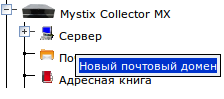
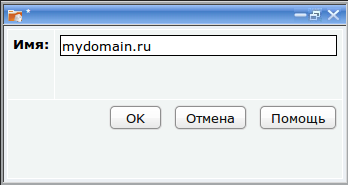
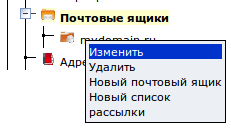
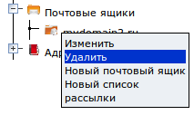

Работа с почтовыми доменами
Почтовый сервер позволяет создать и обслуживать любое количество
почтовых доменов. Каждый домен может содержать почтовые ящики и списки
рассылки.
Создание почтового домена
1. Нажмите правкой кнопкой мыши по разделу дерева "Почтовые ящики"
2. Выполните команду "Новый почтовый домен" из контекстного меню

3. В появившемся окне введите имя почтового домена

4. Нажмите "ОК"
Почтовый домен появится в дереве.
Изменение имени почтового домена
1. Разверните узел дерева "Почтовые ящики"
2. Найдите домен, имя которого хотите изменить
2. Нажмите на нем левой кнопкой мыши или нажмите на нем правой кнопкой мыши и выполните
команду "Изменить" из контекстного меню

3. В появившемся окне измените имя домена
4. Нажмите "ОК"
Имя домена изменится.
Удаление почтового домена
1. Разверните узел дерева "Почтовые ящики"
2. Найдите домен, имя которого хотите изменить
3. Нажмите на имени домена правой кнопкой мыши и выполните команду
"Удалить" из контекстного меню

4. Ответьте утвердительно на вопрос "Вы действительно хотите удалить
домен ?"
Домен будет удален. При удалении домена также удаляются все почтовые
ящики и списки рассылки, которые в него входят, а также, вся почта
вместе с папками на диске, в которых она хранится.